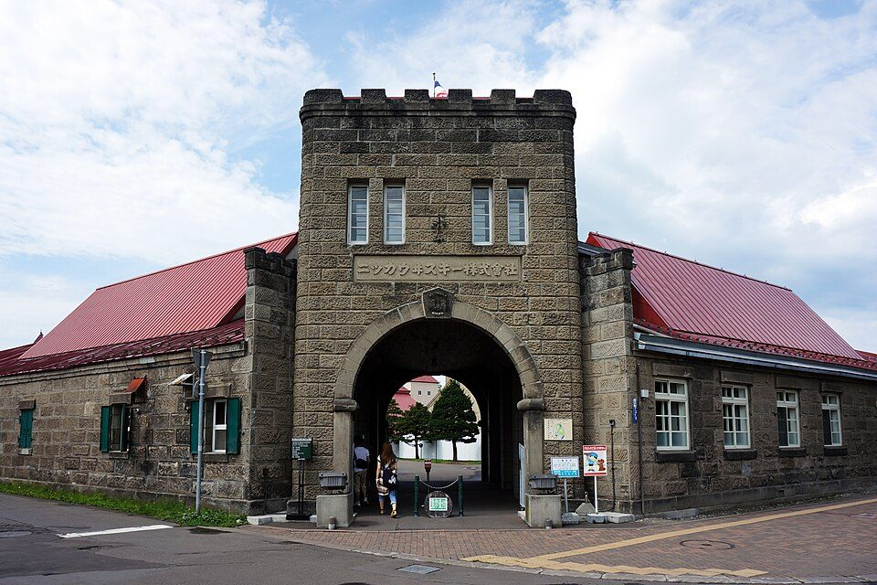
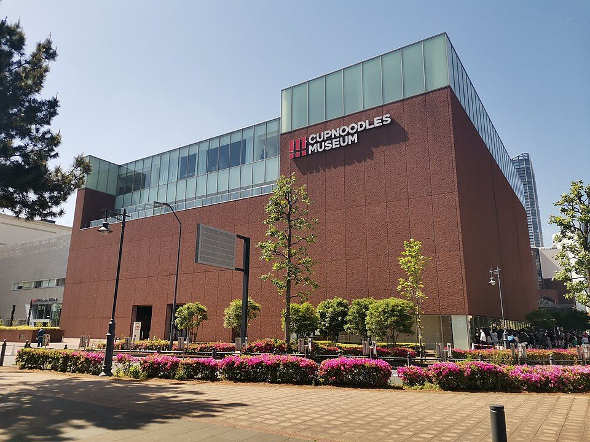
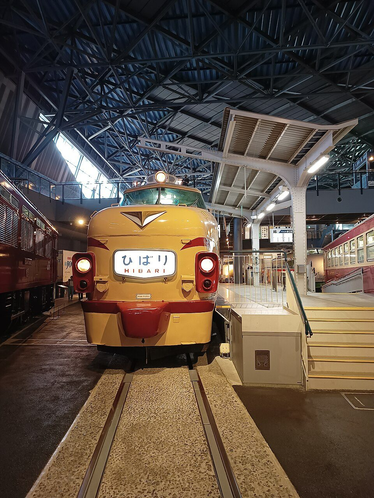
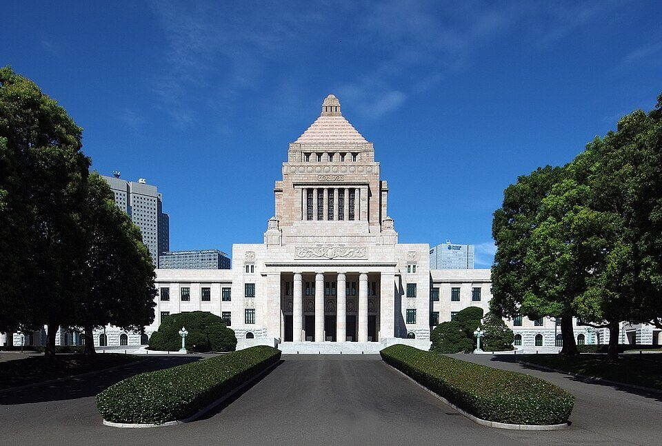

大人も楽しめる工場見学・社会科見学（2026年版）
要点まとめ

料金は大人1人分で、消費税を含む総額です（店などが消費者に示す価格は税込の総額で表示する決まりがあります）。[9]
見学を楽しむコツ
- 予約
予約の受付開始日を先に調べる
- 開始日
人気の施設は受付開始の直後が混む
グリコピア神戸は、受付開始時はネット・電話ともつながりにくいと案内している[10]
- 試飲
お酒の試飲は、その日運転しない20歳以上だけ
- 持ち物
身分証の原本を持っていく
- 撮影
工場の中は撮影禁止のことが多い
例: マツダは組立工場の中と敷地の風景が撮影禁止[3]
- 服装
歩きやすい靴で行く
ビール・ウイスキー・日本酒（試飲つき）
お酒の工場見学は、製造の説明のあとに、できたてを試飲できるのが楽しみです。試飲つきの見学の料金を比べると、次のとおりです。
かっこ内は試飲の量。20歳未満の料金は施設ごとに違う
キリンビール 横浜工場（横浜市）
一番搾りを1杯飲んだあと、4種から2杯までおかわりできる[1]
- 料金
- 1,000円（19歳以下は無料）[1]
- 時間
- 約90分（見学65分・試飲25分）[1]
- 予約
- 必要。1か月前の1日8時から[1]
- 場所
- 京急 生麦駅から徒歩約15分[18]
YEBISU BREWERY TOKYO（東京・恵比寿）
駅から近い都心の醸造所。無料の自由見学もある[17][20]
- 料金
- ツアー2,000円（中学生〜20歳未満1,000円）。自由見学は無料[17]
- 時間
- ツアー約45分（試飲を含む）。自由見学は約20分[17]
- 休み
- 火曜（祝日なら翌日）、年末年始[17]
- 場所
- JR・日比谷線 恵比寿駅から動く歩道で約5分[20]
サッポロビール博物館（札幌市）
ガイドツアーで黒ラベルと復刻札幌製麦酒を1杯ずつ[16]
- 料金
- ガイドツアー2,000円。予約なしの自由見学は1,000円[16]
- 時間
- ガイドツアー約55分（試飲を含む）[16]
- 予約
- ガイドツアーは必要。月曜は実施しない[16]
- 場所
- JR 苗穂駅北口から徒歩約8分[21]
アサヒ スーパードライ ミュージアム（茨城県守谷市）
アサヒの茨城工場の見学。試飲は2杯まで[11]
- 料金
- 1,000円（小学生以上300円、未就学児無料）[11]
- 時間
- 約80分[11]
- 予約
- 必要。ネットは前日正午まで（1〜6名）[11]
オリオンハッピーパーク（沖縄県名護市）
沖縄のオリオンビール工場。試飲は2杯まで[22]
- 料金
- 1,000円（小学生〜19歳350円、未就学児無料）[15]
- 時間
- 1時間[15]
- 予約
- 必要（2名以上）[22][15]
- 休み
- 月曜、年末年始[22]
ニッカウヰスキー 余市蒸溜所（北海道余市町）
無料のガイドツアーで、3種類を1杯ずつ試飲できる[2]
- 料金
- 無料[2]
- 予約
- 必要。4週間先まで受付（1〜9名）[2]
- 休み
- 12月23日〜1月7日、6月11日[2]
キリン 富士御殿場蒸溜所（静岡県御殿場市）
500円の通常ツアーと、5,000円のプレミアムツアーがある[13]
- 料金
- 通常ツアー500円（20歳以上）[13]
- 時間
- 約80分（試飲を含む）[13]
- 休み
- 月曜（祝日なら営業し、次の平日が休館）、年末年始[13]
- 場所
- JR 御殿場駅から無料シャトルバス[23]
月桂冠大倉記念館（京都市伏見区）
20歳以上は3種類のきき酒つき。駅から徒歩5分[14]
- 料金
- 600円（13〜19歳100円、12歳以下無料）[14]
- 時間
- 約40〜60分。9:30〜16:30（受付16:00まで）[14]
- 場所
- 京阪 中書島駅から徒歩5分[14]
お菓子・食品の工場
カップヌードルミュージアム（横浜・大阪池田）
自分だけのカップヌードルを1食500円で作れる[24][25]

- 料金
- 横浜は大人500円（高校生以下無料）。大阪池田は入館無料[24][25]
- 休み
- 火曜（祝日なら翌日）、年末年始[24][25]
- 場所
- 横浜はみなとみらい駅から徒歩8分[26]
白い恋人パーク（札幌市）
白い恋人が作られる工場を見られる。2026年にリニューアル[27]
- 料金
- おとな1,200円、こども600円（有料エリア）[28]
- 時間
- 10:00〜17:30（最終受付16:30）[28]
グリコピア神戸（神戸市西区）
無料でポッキーとプリッツの製造ラインを見られる[10]
- 料金
- 無料（手作りビスコ体験は有料）[10]
- 時間
- 約80分（体験は別に約70分）[10]
- 予約
- 完全予約制。12月分は11月4日から受付中[10]
- 休み
- 金曜、お盆、年末年始など。2026年12月25日〜2027年1月3日は休館[10]
- 場所
- 地下鉄 西神中央駅から神姫バス[10]
森永製菓 MORIUM＆鶴見工場（横浜市）
無料・平日のみ。小学生以上が見学できる[29]
- 料金
- 無料[29]
- 予約
- 完全予約制（ネットのみ・1〜6名）。見学月の1か月前の1日9時から受付[29]
- 見学日
- 平日（土日祝、年末年始などを除く）[29]
MIZKAN MUSEUM（愛知県半田市）
江戸時代の酢づくりと、いまの醸造の様子をガイドつきで見る[30]
- 料金
- 大人500円（中高生300円、小学生200円）[30]
- 時間
- 120分（ガイド約50分）[30]
- 休み
- 木曜、年末年始、お盆[30]
- 場所
- JR 半田駅から徒歩3分[31]
車・鉄道・ものづくり
マツダミュージアム（広島県府中町）
歴史展示に加え、実際の組立工場を目の前で見られる[3]
- 料金
- 無料[3]
- 予約
- 必要。3か月前の同日9時から2日前まで[32]
- 場所
- JR 向洋駅南口から徒歩5分（本社ロビーに集合）[33]
SUBARU 矢島工場（群馬県太田市）
最終組立ラインの見学と、VRでの工場見学を組み合わせる[34]
- 料金
- 無料[34]
- 時間
- 約1時間45分[34]
- 予約
- 60日前の10時から20日前まで[34]
トヨタの3施設（名古屋・長久手・豊田）
機械の実演、クルマの歴史、トヨタ車の展示と見どころが違う
日産 横浜工場（横浜市）
無料で、最新エンジンの組立ラインとエンジンミュージアムを見られる[41][42]
- 料金
- 無料[42]
- 予約
- 必要。受付は基本的に毎月1日〜10日[41]
- 見学日
- 月・火・木・金[41]
鉄道の博物館（さいたま・名古屋）

朝日新聞 大阪工場（大阪市福島区）
無料で、新聞を刷る輪転機を間近で見られる[47]
- 料金
- 無料[47]
- 時間
- 約1時間40分（集合から解散まで）[47]
- 予約
- 完全予約制。小学生以上[47]
そのほかのものづくりミュージアム
タイル・トイレ・乗り物など、体験型の展示が多い
国の施設・インフラ
国会議事堂（東京・永田町）
9名以下なら予約なしで参加できる。衆議院は土日祝日も[4][53]

- 料金
- 無料。参議院は身分証も不要[63]
- 時間
- 参議院はおおむね60分[53]
- 参議院
- 月〜金の9時〜16時、毎正時に出発[53]
- 注意
- 手荷物検査がある（衆議院は小学生以下を除く）。荷物を預ける場所はない[4]
迎賓館赤坂離宮（東京・元赤坂）
国の迎賓施設。本館と庭園は申込み不要で参観できる[54]
- 料金
- 本館・庭園で一般1,800円（大学生1,000円、中高生500円）[54]
- 時間
- 10:00〜17:00（本館の最終受付16:00）[54]
- 公開日
- 公開しない日があるので、公開日程で確かめる[55]
- 場所
- 四ツ谷駅から徒歩約7分[56]
日本銀行本店と貨幣博物館（東京・日本橋）
本店見学は無料。小学5年生以上が対象[7]
- 本店
- 無料・約60分。予約は90日前から原則5日前まで[7]
- 博物館
- 貨幣博物館は無料。月曜休館（祝休日は開館）[57]
- 注意
- 本店見学は全員の身分証（原本）が必要[7]
国立印刷局 東京工場（お札の工場）とお札と切手の博物館
お札の印刷現場を見て、1億円の重さを体験できる[8]
- 料金
- 工場見学も博物館も無料[8][58]
- 工場
- 火・木、約90分。小学生以上、個人でも申し込める[8]
- 予約
- 2か月前の月の初営業日9時から2週間前まで[8]
- 博物館
- 王子駅から徒歩3分。月曜休館[58]
造幣局（大阪・さいたま）
皇居一般参観（東京・千代田区）
当日も、各回300人まで先着順の整理券で参加できる[5]
- 料金
- 無料[64]
- 時間
- 午前1回・午後1回。屋外を約2.2km、1時間程度歩く[5]
- 休み
- 日曜・月曜など[5]
- 注意
- 本人確認書類が必要。18歳未満は成年者の同伴が必要[5]
京都御所と桂離宮（京都市）
京都御所は無料・申込み不要。職員の案内（約50分）もある[6]
首都圏外郭放水路（埼玉県春日部市）
巨大な柱が並ぶ地下の水槽「地下神殿」を歩ける[12]
- 料金
- 地下神殿コース1,200円（ほかに長いコースもある）[12]
- 時間
- 地下神殿コース約55分[12]
- 注意
- 階段約100段を上り下りする。床がぬれて滑りやすい所がある[12]
JAXA 筑波宇宙センター（茨城県つくば市）
500円のツアーで、宇宙飛行士の養成エリアと「きぼう」の管制室を見る[62]
- 料金
- 18歳以上500円（高校生以下・18歳未満は無料）[62]
- 予約
- ネットの完全予約制[62]
地域別の一覧
| 地域 | 施設 | 料金 |
|---|---|---|
| 北海道 | サッポロビール博物館 | 2,000円（ツアー） |
| 白い恋人パーク | 1,200円 | |
| ニッカ 余市蒸溜所 | 無料 | |
| 関東 | 国会議事堂 | 無料 |
| 迎賓館赤坂離宮 | 1,800円 | |
| 日本銀行本店・貨幣博物館 | 無料 | |
| 国立印刷局 東京工場・博物館 | 無料 | |
| 皇居一般参観 | 無料 | |
| YEBISU BREWERY TOKYO | 2,000円（ツアー） | |
| キリンビール 横浜工場 | 1,000円 | |
| カップヌードルミュージアム 横浜 | 500円 | |
| 森永 MORIUM＆鶴見工場 | 無料 | |
| 日産 横浜工場 | 無料 | |
| 鉄道博物館（さいたま） | 1,600円 | |
| 造幣局 さいたま支局 | 無料 | |
| 首都圏外郭放水路 | 1,200円〜 | |
| アサヒ スーパードライ ミュージアム | 1,000円 | |
| JAXA 筑波宇宙センター | 500円（ツアー） | |
| SUBARU 矢島工場 | 無料 | |
| 中部 | キリン 富士御殿場蒸溜所 | 500円 |
| トヨタ産業技術記念館 | 1,000円 | |
| トヨタ博物館 | 1,200円 | |
| トヨタ会館 | 無料 | |
| リニア・鉄道館 | 1,200円 | |
| MIZKAN MUSEUM | 500円 | |
| INAXライブミュージアム | 1,000円 | |
| 近畿 | 月桂冠大倉記念館 | 600円 |
| 京都御所 | 無料 | |
| 桂離宮 | 1,000円 | |
| 造幣局 本局（大阪） | 無料 | |
| 朝日新聞 大阪工場 | 無料 | |
| カップヌードルミュージアム 大阪池田 | 無料（体験は有料） | |
| グリコピア神戸 | 無料 | |
| カワサキワールド | 900円 | |
| 中国 | マツダミュージアム | 無料 |
| 九州・沖縄 | TOTOミュージアム | 無料 |
| オリオンハッピーパーク | 1,000円 |
今回載せなかったもの・確認できなかった点
- サントリーの山崎蒸溜所やビール工場は、公式サイトを今回の調査環境で開けず、最新の料金・予約方法を確かめられなかったため載せていない
- 京都鉄道博物館も、公式サイトの本文を確認できなかったため載せていない
出典（68件）
閲覧日はいずれも2026年11月2日
- キリン一番搾りおいしさ実感ツアー（横浜工場）（キリンビール）
- 余市蒸溜所 よくあるご質問（ニッカウヰスキー）
- マツダミュージアム よくあるご質問（マツダ）
- 国会参観（衆議院）の手続き（衆議院）
- 皇居参観案内（宮内庁）
- 京都御所 参観要領（宮内庁京都事務所）
- 本店見学（日本銀行）
- 東京工場 工場見学（国立印刷局）
- No.6902「総額表示」の義務付け（国税庁）
- グリコピア神戸（江崎グリコ）
- スーパードライ ミュージアム ツアーのお申し込み（アサヒビール）
- 見学会 コース詳細（首都圏外郭放水路）
- キリンディスティラリー 富士御殿場蒸溜所（キリンビール）
- 月桂冠大倉記念館 ご見学案内・アクセス（月桂冠）
- オリオンハッピーパーク 工場見学予約（オリオンビール）
- サッポロビール博物館 利用案内（サッポロビール）
- YEBISU BREWERY TOKYO 利用案内（サッポロビール）
- 横浜工場 アクセス（キリンビール）
- 「一番搾りおいしさ実感ツアー」参加費の改定について（全国9工場が対象。神戸工場のお知らせ）（キリンビール）
- YEBISU BREWERY TOKYO アクセス（サッポロビール）
- サッポロビール博物館 アクセス（サッポロビール）
- 工場見学と施設のご案内（オリオンハッピーパーク）（オリオンビール）
- 富士御殿場蒸溜所 アクセス（キリンビール）
- カップヌードルミュージアム 横浜 開館時間・料金（日清食品）
- カップヌードルミュージアム 大阪池田 開館時間・料金（日清食品）
- カップヌードルミュージアム 横浜（日清食品）
- 白い恋人工場リニューアルオープン（石屋製菓）
- 白い恋人パーク 料金（石屋製菓）
- MORIUM&鶴見工場（森永製菓）
- MIZKAN MUSEUM ご利用案内（ミツカン）
- MIZKAN MUSEUM アクセス（ミツカン）
- マツダミュージアム 予約について（マツダ）
- マツダミュージアム アクセス（マツダ）
- 工場見学予約サイト（矢島工場・スバルビジターセンター）（SUBARU）
- 入館料・開館時間（トヨタ産業技術記念館）
- アクセス（トヨタ産業技術記念館）
- 入館料・開館時間（トヨタ博物館）
- アクセス（トヨタ博物館）
- トヨタ会館 施設情報（トヨタ自動車）
- トヨタ会館 展示内容（トヨタ自動車）
- 工場見学 横浜工場（日産自動車）
- 工場見学 よくあるご質問（日産自動車）
- ご利用案内（鉄道博物館）
- リニア・鉄道館 施設案内（JR東海）
- アクセス（鉄道博物館）
- リニア・鉄道館 アクセス（JR東海）
- 朝日新聞大阪工場 工場見学（トッパンメディアプリンテック関西）
- INAXライブミュージアム ご利用案内（LIXIL）
- INAXライブミュージアム（LIXIL）
- 料金（カワサキワールド共通）（神戸海洋博物館）
- カワサキワールド（川崎重工業）
- TOTOミュージアム（TOTO）
- 参観案内（参議院）
- 迎賓館赤坂離宮 参観概要（内閣府迎賓館）
- 迎賓館赤坂離宮 公開日程（内閣府迎賓館）
- 迎賓館赤坂離宮 アクセス（内閣府迎賓館）
- 貨幣博物館（日本銀行金融研究所）
- お札と切手の博物館 入館案内・アクセス（国立印刷局）
- 工場見学（本局）（造幣局）
- 工場見学（さいたま支局）（造幣局）
- 桂離宮 参観申込要領（宮内庁京都事務所）
- 筑波宇宙センター 有料見学ツアー（JAXA）
- 参観に関するよくあるご質問（参議院）（閲覧日 2026年11月5日）
- 参観ご希望の方へ（皇居・京都御所・離宮参観）（宮内庁）（閲覧日 2026年11月5日）
- マツダミュージアム イベント情報（マツダ）（閲覧日 2026年11月5日）
- 【11月23日(月)】特別休館のお知らせ（カップヌードルミュージアム 横浜）（閲覧日 2026年11月5日）
- 年末年始および設備メンテナンスに伴う休館について（カップヌードルミュージアム 大阪池田）（閲覧日 2026年11月5日）
- 紫宸殿整備工事（宮内庁）（閲覧日 2026年11月5日）
写真・画像の出典（4件）
- ニッカウヰスキー 余市蒸溜所の正門（北海道余市町）
写真: 663highland／Wikimedia Commons（CC BY 2.5） - カップヌードルミュージアム 横浜
写真: Keeezawa／Wikimedia Commons（CC0（パブリックドメイン）） - 鉄道博物館（さいたま市）に展示されている特急「ひばり」
写真: Mauricio V. Genta／Wikimedia Commons（CC BY-SA 4.0） - 国会議事堂（東京都千代田区）
写真: Wiiii／Wikimedia Commons（CC BY-SA 3.0）